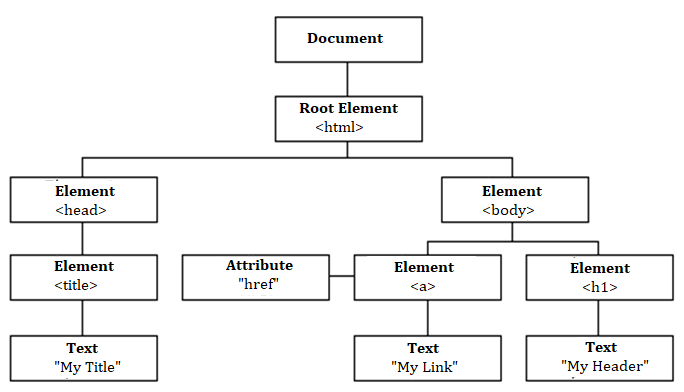

BASICS OF HTML
What is HTML?
HTML stands for Hyper Text Markup Language.
Dictionary.com defines a Markup as:
a set of detailed instructions, usually written on a manuscript to be typeset, concerning style of type,
makeup of pages, and the like.
So you can think of HTML as the language used for creating detailed instructions concerning style, type,
format, structure and the makeup of a web page before it gets printed (shown to you).
But in the context of web development, we can replace the term ‘printed’ with ‘rendered’ as a more accurate
term.
HTML helps you structure your page into elements such as paragraphs, sections, headings, navigation bars,
and so on.
What is CSS?
While HTML is a markup language used to format/structure a web page, CSS is a design language that you use
to make your web page look nice and presentable.
CSS stands for Cascading Style Sheets, and you use it to improve the appearance of a web page. By adding
thoughtful CSS styles, you make your page more attractive and pleasant for the end user to view and use.
Imagine if human beings were just made to have skeletons and bare bones – how would that look? Not nice if
you ask me. So CSS is like our skin, hair, and general physical appearance.
You can also use CSS to layout elements by positioning them in specified areas of your page.
To access these elements, you have to “select” them. You can select a single or multiple web elements and
specify how you want them to look or be positioned.
The rules that govern this process are called CSS selectors.
With CSS you can set the colour and background of your elements, as well as the typeface, margins, spacing,
padding and so much more.
What is JavaScript?
Now, if HTML is the markup language and CSS is the design language, then JavaScript is the programming
language.
If you don’t know what programming is, think of certain actions you take in your daily life:
When you sense danger, you run. When you are hungry, you eat. When you are tired, you sleep. When you are
cold, you look for warmth. When crossing a busy road, you calculate the distance of vehicles away from you.
Your brain has been programmed to react in a certain way or do certain things whenever something happens. In
this same way, you can program your web page or individual elements to react a certain way and to do
something when something else (an event) happens.
You can program actions, conditions, calculations, network requests, concurrent tasks and many other kinds
of instructions.
You can access any elements through the Document Object Model API (DOM) and make them change however you
want them to.
The DOM is a tree-like representation of the web page that gets loaded into the browser.
